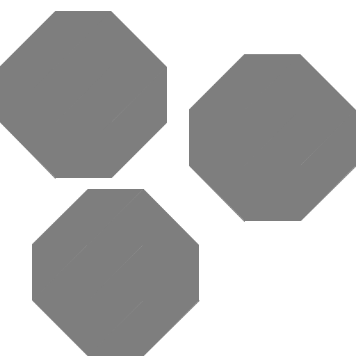
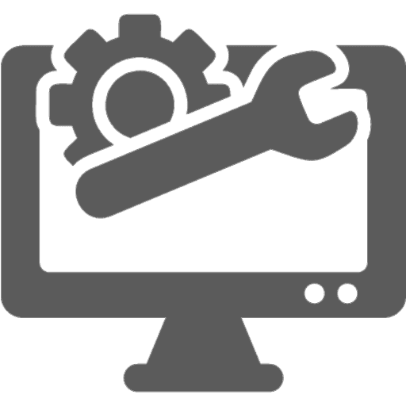
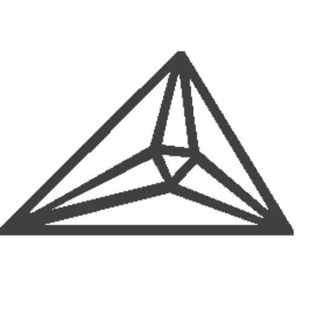

Overview
Hello! My name is John Jerney and I’m a junior in high school. In the future, I want to be a computer science professor or researcher. In my free time, I enjoy programming, making music, and binging YouTube.
Mission Statement: I want explore the intersection of technology and education, inspiring individuals of all ages to innovate using tools that solve theoretical problems and drive real-world improvement.
STEM Activities
I like to think of myself as rather involved in STEM, though I still have a long way to go :)
Hoping to do an internship this summer!
Green Machine
I’m computer systems programmer in a top #39 worldwide robotics team, The Green Machine! The team is part of the FIRST Robotics Competition organisation, and our team number is 1816.
Specifically, I’m working on autonomous systems for the robot for things like autopathing and aim, as well as the app we use for scouting other teams.
Unnamed Startup
I’m working with a few friends to create a startup that creates lab equipment for high schoolers and college students. It's made to be as easy to use as possible, so that labs are not hindered by difficulties with the technology itself.
High School CS Club
Co-president of my school’s computer science club, where we teach computer science! We hope to participate in competitions and maybe, just maybe, write a research paper about AI by the end of the year.
While the club didn’t run last year, We’re finally back and running with about 15 members. Some of us are planning on participating in Advent of Code-- check out AoC if you’d like to try it for yourself!
Math Team
I am (admittedly) one of the lower-scoring members on my school’s math team, which competes statewide in the MN Math League.
The math team is one of my main focuses for this academic year: I’ve been steadily improving at doing high-level mathematics and hope to be able to be one of the ten representatives for my school by next year. Wish me luck!
Minecraft Server Dev
Both a configurator and a programmer at several Minecraft servers, some of which garnering hundreds of players per month. I won’t say which ones so that I don’t get doxxed.
I don’t do much of this anymore, since I’ve decided to focus a bit more on academics. I might come back at some point, but it doesn’t look like I’ll do so in the very near future.
Misc
I’m not just some programmer! I have other things I do in my free time.
-
Orchestral Music
I enjoy playing the contrabass, cello and piano, though I mainly play the contrabass. I’m assistant principal at both the Minnesota All-State Orchestra as well as GTCYS Philharmonic, and principal bassist in my school.
-
Tutoring
Starting this fall, I’m going to be tutoring middle schoolers that might need a little bit of a push to get through middle school.
One day, I hope to become a professor at a college, and these are my first steps into learning how to teach others.
Awards/Certs
Not too much to see here-- I’m not a huge math olympiad guy, nor a crazy-fast algorithm competitor, just an average guy who likes to program.
-
CodeWithMosh Certs
Went through a huge phase in my sophomore year where I absolutely grinded CodeWithMosh. He’s partially my inspiration for wanting to be a computer science educator.
I have completed the C++ Advanced, Java Advanced, JavaScript Advanced, and Python Advanced, and am working on SQL and Data Structures through Mosh’s amazing lectures.
-
[In-progress] CS50 Cert
I recently heard about how good the CS50 Intro to Programming course is, and decided to try it out a bit for myself. What I was not prepared for was what an excellent David Malan was. He is an extremely competent lecturer.
Though I initially decided to check out the course to figure out how Malan is such a good teacher, I’ve decided to stick around and take the entire course. Who knows, I’ll probably learn a thing or two along the way.
-
AP Scholar w/ Honour
Not much to say here, I suppose? Hoping to get a distinction in May.